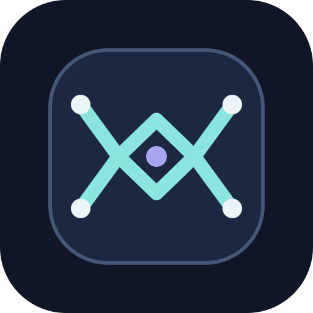
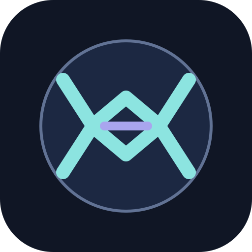
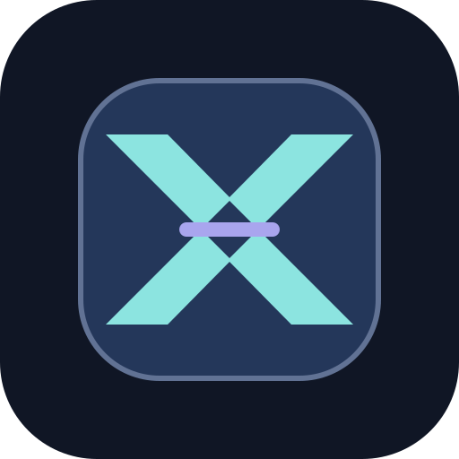
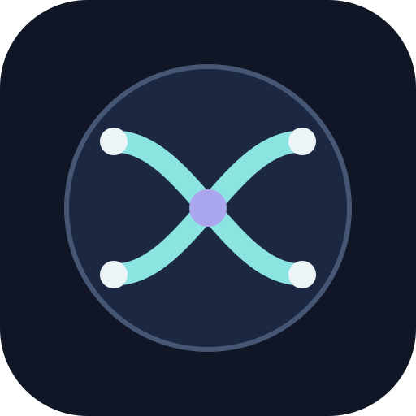
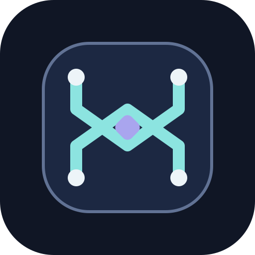

01
거울 궤적
세 경로를 뒤집고 다시 반사한 M·W 중간 형태.
48px / 24px
M처럼도 W처럼도 읽히는 형태. 각 도형의 중심은 256×256에 두고 좌우·상하를 거울처럼 맞췄습니다.

세 경로를 뒤집고 다시 반사한 M·W 중간 형태.

선이 중앙에서 접혀 만나는 추상 기호. 앱 아이콘에 무게감.

채운 면 사이의 빈 공간이 M과 W를 암시합니다.

네 기록점이 하나의 중심을 지나 연결됩니다.

뒤집힌 세 줄기의 구조를 유지하며 중앙에 기록점을 둡니다.